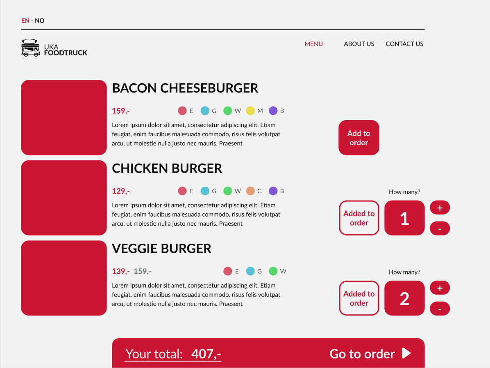

During the month of October this year, Norway's biggest cultural festival will be coming to
Trondheim. UKA is a bi-yearly festival entirely run on a volunteer basis by the city's
students. During the festival there will be a food truck serving food at various events. The
food truck is quite small in terms of manpower, so there isn't much room for a focus on promotion.
This is, however, something that will help get the word out about the food truck and boost sales.
Purpose, goals, and audience
To give the food truck better visibility and better availability, the boss of the food truck requested a simple,
yet good-looking, website to be made. The website should be able to show where the food truck is, its opening
hours, as well as showing the menu and enable the customers to order their food through it.
The website's typical user will be students attending events during "UKA". The students will use the website to
find a map of the venues where UKAs events are being held and where the food truck is placed. They will also
find the menu, place orders and find and overview of the opening hours. Since many of the events sell a lot of
alcohol, the webpage should be simple to navigate and use for people who might be a bit intoxicated.
Navigation Structure
The navigation structure of the website for UKAs food truck can be described as clique, see figure below.
As shown in the figure, you can reach every page except the order page no matter where you are on the website.
The pages are accessible through a navbar on the top of the website. The order site is only reachable from the
menu site as it is a site to confirm your order.
This structure makes sense for our website because we have chosen to focus on an easy navigation.
We think the ability to reach every page with one click fits our users because they, as mention before, might be
a bit intoxicated, and some might click on the wrong buttons.
Page Layout and Appearance
Content
Home
The home page presents the food truck with the most relevant information. It will give a short introduction
to the user, describe the location and the opening hours of the food truck. Beneath this a map showing the
location will be displayed. When the user clicks on the map it will open a new tab and take them to the
Google Maps page with the location selected for navigation. This will make it easy for the user to get an
instant location and a route to navigate to the food truck.
To the right of all this will be a dynamic display showing if the food truck is currently open or not. This
will change given the time of day, comparing the current time to the opening hours. Finally, a highlight
from the menu will be displayed with a small picture and its description. Clicking this section will take the
user over to the menu page.
Menu
This page will contain a list of all the items on the menu, what they are, what they look like, what they
contain and what they cost. The page will also contain buttons for each item to add or remove them from your
order. This page fulfills the goal of allowing users to place orders through the website.
The unique design decisions for this page are going to be in regard to how we present the menu items. As
shown on the image below, we plan on having a small image for each item, with the name, price, a short
description and a hypertext to click for a modal with more details about the product to the side of the
image. On lager devices the option to add and remove items from the order will be on the right-hand side of
the item details, while on smaller devices this will be below.

Order confirmation
This page will contain a simplified list of the selected items, the amount and price. The page will also
contain buttons for each item to add or remove them from your order as well as a field to add a comment to
the order.
About Us
The about page will contain information about the Food Truck of UKA-21. This information will be displayed in a
reader friendly manner, with multiple paragraphs and padding on the sides. Questions to the side of the
paragraphs will indicate what information is given. Pictures displaying the food truck and its employees will be
displayed side by side in a small format as seen on the figure below. When the user clicks on the images the image
will become larger and take up most of the screen, dimming the rest of the page in the background.
Contact us
The contact us page will contain two distinct parts. The first one is a form for giving feedback to the food truck.
Here, users will fill in their information and write what the feedback is about and finally their message. We will
check that all the fields are filled out before the user then can submit the form.
The second part is a map displaying the location of the food truck at a given scale. When the user clicks on the
map it will open a new tab and take them to the Google Maps page with the location selected for navigation. This will
make it easy for the user to get an instant location and a route to navigate to the food truck.
Minimum Requirements
Auto navbar/footer
This will fill in the navbar and footer on every HTML page
Check if FoodTruck is open
This will display different images on the homepage by comparing the current to the
opening hours of the foodtruck
Language function
Will switch the language on the page between English and Norwegian
Increase decrease menu item selection
A simple counter to select the desired amount of a menu item
Send order to confirm order page
Here we will store the order in text code and include that in the url for the
confirm order page
Read order on confirm order page
Exstracts the text code from the url and displays the items that were selected
Contact Us
This function will check if the user has filled out all of the text fields, then display a confirmation
message and clear the fields.
Plan
List of Files of Folders
homepage.html
menu.html
order.html
about.html
contact_us.html
images/
logo.png
food_1.png
...
food_n.png
map.png
about_us_1.png
...
about_us_n.png
js/
main.js
menu.js
css/
main.css
Filename/ function
Description
In charge
Deadline
homepage.html
See description under content, homepage.
menu.html
See description under content, menu.
order.html
See description under content, order.
about.html
See description under content, about.
contact_us.html
See description under content, contact us.
main.js
Auto navbar and footer,
check if the food truck is open (homepage),
contact us form (contact us page)
Ingrease/ decrease menu item section
Send order to confirm order page
Save information about order (type of food, amount).